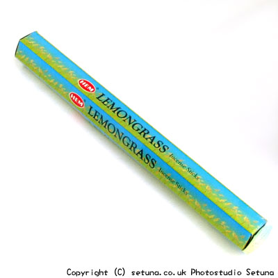

ハーブで有名なイネ科のレモングラスのお香。点ける前はイネ科独特の匂いがして少々田舎っぽい(?)匂い。(笑火を点けた後はレモンによく似た爽やかな匂いがぱっと部屋中に広がります。まるで部屋の色まで変わるような気がします。虫除け効果もあるので空気を清浄にしてくれる感じですね。残り香は以外と長持ちするタイプで、爽やかな香りがそのまま漂います。気持ちのよいお香です。羽虫等の害虫除けとして効果を発揮します。
